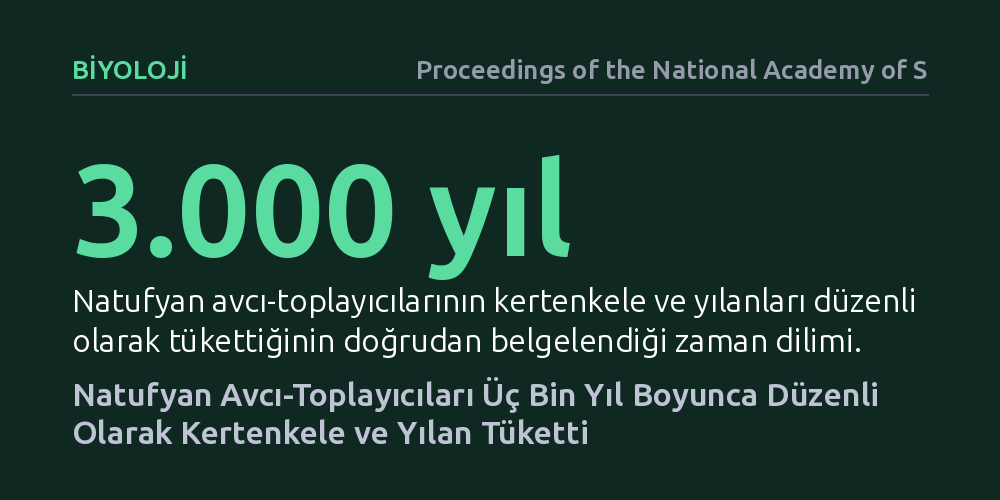

BIYOLOJI · Proceedings of the National Academy of Sciences · 2026-09-09
Araştırmacılar, Doğu Akdeniz'deki Natufyan yerleşimlerinde bulunan sürüngen kalıntılarını inceleyerek tarihöncesi insanların pullu sürüngenlerle ilişkisini araştırdı. Bulgular, avcı-toplayıcı toplulukların üç bin yıl boyunca düzenli olarak kertenkele ve yılanları kesip tükettiğini doğrudan kanıtladı.
Tarım öncesi insanların beslenmesinde yalnızca iri memelilere odaklanıldığı kabulünü yıkarak, küçük sürüngenlerin binlerce yıl boyunca kararlı ve vazgeçilmez bir protein kaynağı olduğunu gösterir.

Tarihöncesi insan dendiğinde akla çoğunlukla mamutlar, kızıl geyikler veya yaban öküzleri peşinde koşan avcılar gelir. Ancak tarıma geçişin arifesindeki Epipaleolitik dönemde, özellikle Doğu Akdeniz'de yaşamış Natufyan topluluklarının ne yediği sorusu, insanlığın yerleşik hayata nasıl adım attığını anlamak açısından kilit bir rol oynar. Arkeolojide uzun süre, küçük hayvanların ve özellikle sürüngenlerin yalnızca kıtlık anlarında tüketildiği ya da mağaralardaki kemiklerin oraya yırtıcı kuşlar tarafından taşındığı varsayıldı.
Bu yaygın kabul, tarihöncesi insanların çevrelerindeki biyolojik çeşitlilikten nasıl yararlandığını eksik anlamamıza neden oluyordu. Yaklaşık 15 bin ila 11 bin 500 yıl önce yaşamış olan Natufyanlar, ilk kalıcı köyleri kuran öncü topluluklar arasındaydı. Eğer bu insanlar kertenkele ve yılan gibi yakalanması kolay ancak görece az et veren canlıları düzenli olarak sofralarına dahil ettiyse, bu durum yerleşikleşmenin getirdiği nüfus baskısı ve kaynak yönetimi hakkında bildiklerimizi kökten değiştirebilir.
Araştırmacılar bu soruyu aydınlatmak için Doğu Akdeniz'deki Natufyan yerleşim katmanlarından çıkarılan zengin mikro omurgalı kalıntılarını ayrıntılı biçimde inceledi. Kazı alanlarından toplanan binlerce küçük omurga, kaburga ve çene parçası titizlikle elenerek tür düzeyinde sınıflandırıldı. Kalıntılar arasında özellikle kertenkeleler ile zehirli ve zehirsiz yılan türlerine ait pullu sürüngen kemikleri önemli bir yer tutuyordu.
Kemiklerin insan tüketimine mi ait olduğunu yoksa doğal yollarla mı biriktiğini belirlemek için zooarkeolojik mikroskop analizleri uygulandı. Taş aletlerle et sıyırma, kafa koparma veya deriyi yüzme sırasında kemik yüzeyinde oluşan tipik kasaplık kesik izleri, ateşe maruz kalma belirtileri ve sindirim sıvılarının yarattığı aşınmalar tek tek belgelendi. Tabakaların üç bin yıllık geniş bir zaman dilimini kapsaması, bu uygulamanın sürekliliğini test etmeyi mümkün kıldı.
Elde edilen sonuçlar, Natufyanların kertenkele ve yılanları tesadüfi olarak değil, planlı ve düzenli bir biçimde işleyerek tükettiğini ortaya koydu. İncelenen sürüngen kemiklerinde taş aletlerle yapılmış karakteristik kesik izleri ve kontrollü pişirme işaretleri saptandı. Bu doğrudan kanıtlar, sürüngenlerin derisinin yüzüldüğünü, parçalandığını ve besin olarak tüketildiğini netleştirdi.
Çalışmanın en dikkat çekici bulgusu, bu tüketim modelinin kısa süreli bir kıtlık tepkisi olmamasıydı. Arkeolojik katmanlar boyunca yapılan incelemeler, pullu sürüngenlerin yaklaşık üç bin yıl boyunca kesintisiz biçimde avlanıp yenildiğini gösterdi. Başka bir deyişle Natufyan avcı-toplayıcıları, kuşaklar boyunca sürüngenleri kararlı bir besin ve yağ kaynağı olarak görmüştü.
Bu bulgular, avcı-toplayıcılıktan yerleşik hayata geçiş sürecinde insanların besin yelpazesini genişletme stratejilerini somut bir zemine oturtuyor. Büyük memeli avlarının azalması ya da insan nüfusunun belirli alanlarda yoğunlaşması, toplulukları küçük ve tükenmeyen kaynaklara yöneltmişti. Sürüngenler, yüksek riskli büyük av seferlerine kıyasla çocuklar ve yaşlılar dahil topluluğun farklı üyeleri tarafından kolayca toplanabilecek güvenilir bir besin desteği sağlıyordu.
Sonuç olarak insan ile sürüngenler arasındaki tarihöncesi ilişki ilk kez bu denli uzun erimli ve doğrudan kanıtlarla aydınlatıldı. İnsanlığın yerleşik yaşama tutunma başarısı, yalnızca iri avları yakalamasında değil; çevresindeki en küçük biyolojik kaynakları bile binlerce yıl boyunca ustalıkla değerlendirebilen esnek beslenme stratejisinde yatıyordu.